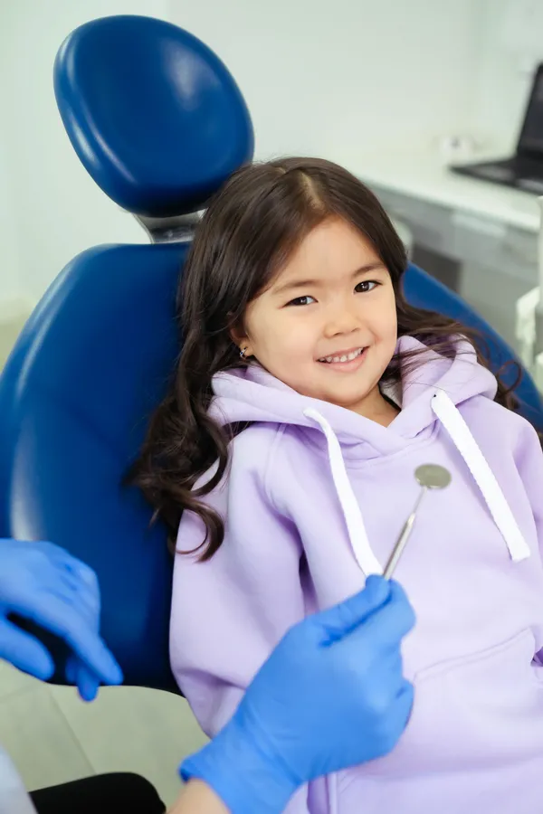
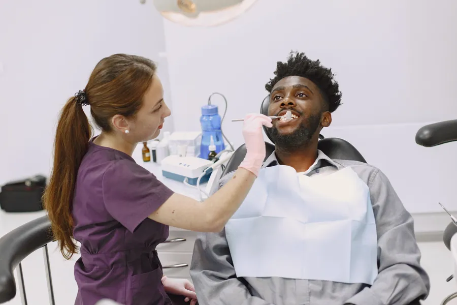
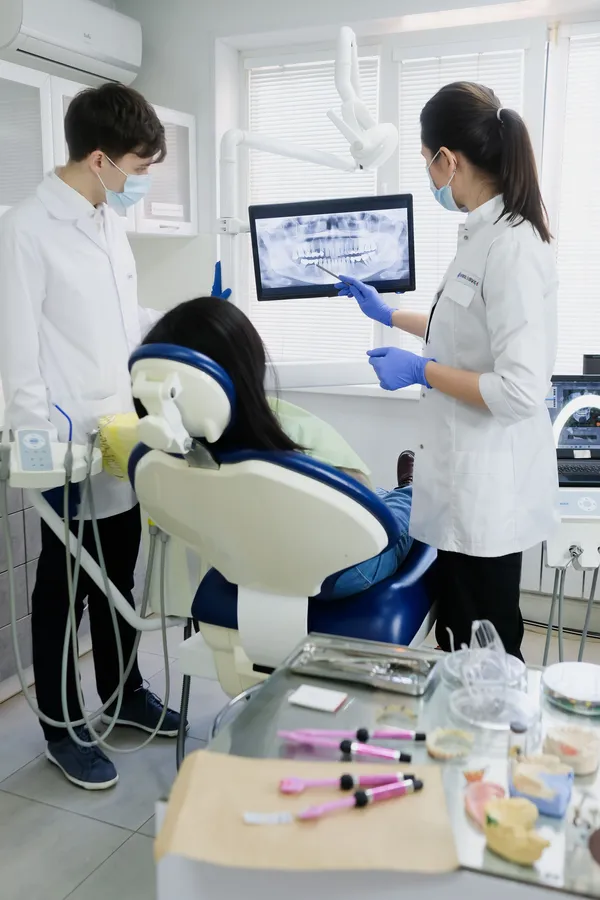

Önce plan,
sonra tedavi.
Tedavi başlıklarınız için sade bilgi, velilere "Çocuk Dostlarım" rehberi ve yurt dışından gelenler için adım adım plan. Randevu fişini Türkçe, Almanca ya da İngilizce hazırlayıp WhatsApp'tan gönderin.
Hangi tedavi, nasıl ilerler?
Başlıklar Instagram profilinizden. Metinler genel bilgilendirmedir; tedavi planı muayenede kişiye göre belirlenir. Fiyat, kampanya, hasta yorumu ya da öncesi-sonrası görsel yer almaz.

İlk ziyaret korkutucu olmasın.
Instagram'daki "Çocuk Dostlarım" bölümünüz, burada velilere yönelik kısa bir rehbere dönüşür. Yayında bu kareler kliniğinizde, veli izniyle çekilen fotoğraflar olur.
Ağrıyı beklemeyin
İlk kontrol için erken tanışma, çocuğun alışmasını kolaylaştırır.
Doğru kelimeyi seçin
"Acımayacak" yerine "dişlerini sayacağız" demek daha sakin bir başlangıç sağlar.
Dinlenmiş bir saat
Randevu fişinde "Çocuk kontrolü"nü seçin, çocuğun dinç olduğu saati yazın.
Tatilde Denizli'ye gelmeden planlayın.
Öne çıkanlarınızda İsviçre, Hollanda, Almanya ve Azerbaycan bayrakları var. Uzaktan gelen hasta için en değerli şey, gelmeden önce neyin nasıl ilerleyeceğini bilmek.

01Önceden yazın
Fişte "yurt dışından geliyorum"u seçin, geliş ve dönüş tarihinizi girin. Mesaj kendi dilinizde hazırlanır.

02Röntgeninizi gönderin
Elinizde yakın tarihli röntgen varsa WhatsApp'tan iletin; ilk muayenede birlikte bakılır.
 03
03Planı muayenede konuşun
Seans sayısı ve süre muayeneden sonra, kalacağınız günlere göre planlanır.
Aus dem Ausland?
Wählen Sie im Terminformular „Deutsch“: Ihre WhatsApp-Nachricht wird auf Deutsch erstellt, mit Ankunfts- und Abreisedatum.
Coming from abroad?
Choose "English" in the appointment form: your WhatsApp message is written in English, with your arrival and departure dates.
Seçin, mesaj yazılsın.
Konu, zaman ve dili seçin; WhatsApp mesajı hazır açılır. Klinik uygun gün ve saati size yazar.
Kliniğe bir bakış.
Yayında kliniğinizin kendi fotoğrafları durur; hasta fotoğrafı ya da öncesi-sonrası kullanılmaz.
Yenişehir'de, Ferah Evler'de.
- Adres
- Yenişehir Mah. 13. Sokak, Ferah Evler No:17, Merkezefendi / Denizli
- Telefon / WhatsApp
- 0501 130 00 20
- @klinikanlyildirim
- Çalışma saatleri
- Sizden alınıp eklenecek